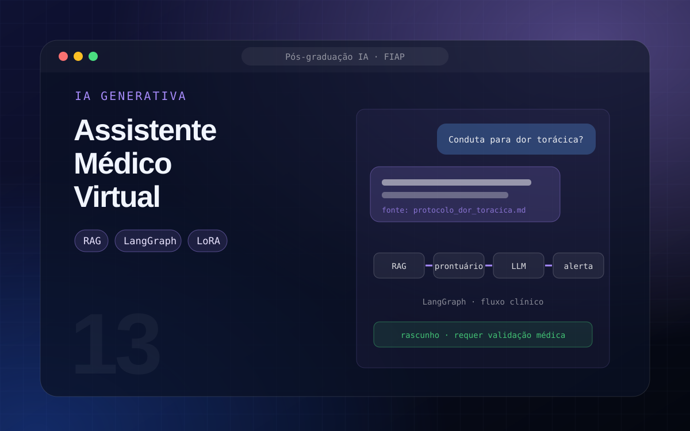
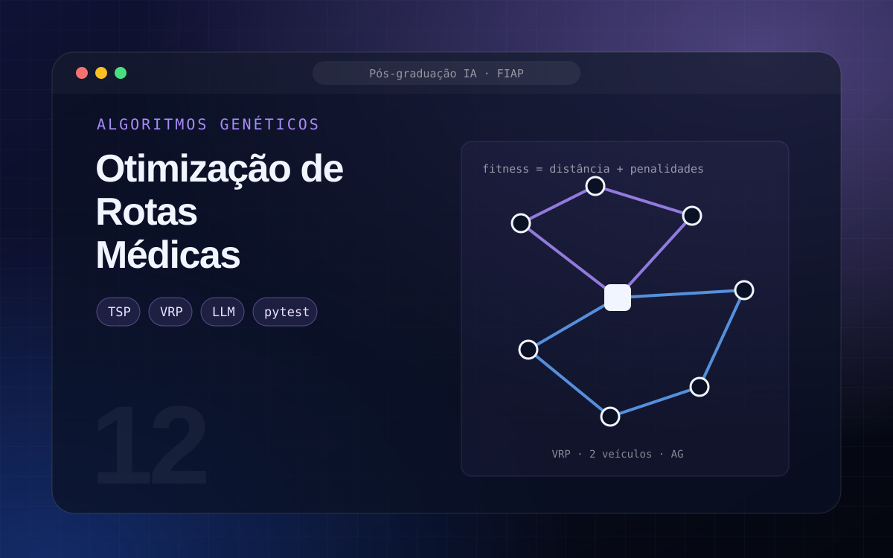
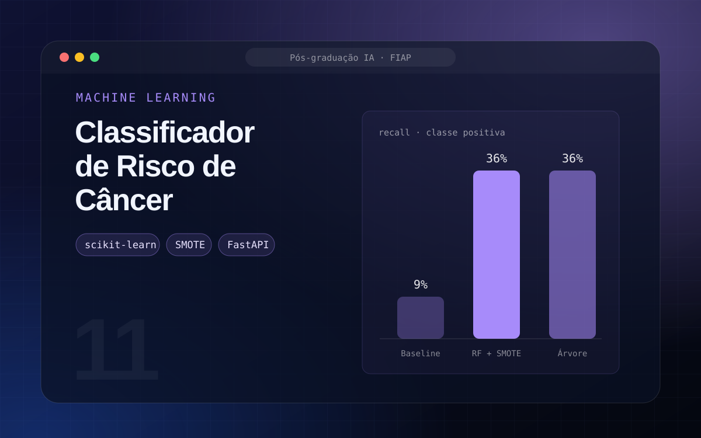

Samsung SDSDesenvolvedor Jr · RPA e Full Stack
Automações em produção, APIs com Java Spring Boot e apps em Flutter — e agentes de IA personalizados para o negócio, com LLMs, RAG, Google Cloud e AWS Bedrock.
~/felipe $ Engenharia de IA aplicada
Na Samsung SDS, construo agentes de IA com LLMs e RAG, automações RPA que transformam semanas de trabalho em minutos e soluções full stack de ponta a ponta.
 Felipe Soeiro LopesSão Paulo · Brasil
Disponível
Felipe Soeiro LopesSão Paulo · Brasil
Disponível
Automações em produção, APIs com Java Spring Boot e apps em Flutter — e agentes de IA personalizados para o negócio, com LLMs, RAG, Google Cloud e AWS Bedrock.
Na Samsung SDS, construo agentes totalmente personalizados para o negócio: LLMs e RAG sobre bases de conhecimento, modelos administrados em Google Cloud e AWS Bedrock e integrações com APIs e fluxos de automação.
Três tech challenges entregues: classificação com machine learning, otimização com algoritmos genéticos e assistente com RAG, LangGraph e fine-tuning LoRA.
Ver formação
A IA resolve o problema; automação e full stack fazem a solução chegar no usuário.
Agentes de IA sob medida para o negócio — LLMs, RAG e orquestração com LangGraph, modelos administrados em Google Cloud e AWS Bedrock — além de machine learning clássico com scikit-learn.
Robôs que eliminam tarefas repetitivas e devolvem tempo ao time. Processos que levavam semanas passam a rodar em minutos — com monitoramento e sustentação em produção.
APIs REST com Java Spring Boot, interfaces com Flutter e JavaScript e integrações entre sistemas — do banco de dados à tela, com testes, versionamento e documentação.
Não é só chamar um LLM: é dado tratado, contexto certo, orquestração, segurança e deploy. O mesmo método que aplico na Samsung SDS e nos projetos da pós.
Curadoria das bases de conhecimento e anonimização de dados sensíveis antes de qualquer modelo tocar neles.
Busca vetorial sobre documentos internos, com a fonte citada em cada resposta — sem “achismo” do modelo.
Agentes que decidem o próximo passo, chamam APIs e seguem fluxos com estado e regras de negócio.
Validação humana nas decisões críticas, logs de auditoria e testes automatizados cobrindo o fluxo.
Modelos administrados em cloud e serviços em contêiner, prontos para escalar e para o time sustentar.
$ python -m src.main ask "Conduta para dor torácica no paciente P-003?"
→ rag 3 trechos recuperados · protocolo_dor_toracica.md
→ prontuário troponina pendente · paciente anonimizado
→ llm resposta gerada com contexto + fonte citada
→ fluxo alerta enviado à equipe médica
✓ rascunho pronto · aguardando validação médica · log de auditoria salvoProjetos de IA da pós-graduação na FIAP, feitos em equipe: machine learning, otimização e IA generativa aplicados à saúde.

IA · FIAPAssistente clínico com RAG sobre protocolos internos, fluxo de decisão em LangGraph, fine-tuning LoRA/PEFT e anonimização de dados sensíveis — cita a fonte de cada resposta e registra logs de auditoria.

IA · FIAPAlgoritmo genético para TSP e VRP com restrições de capacidade, autonomia e prioridade de entrega, visualização em Pygame, relatórios gerados por LLM e 62 testes automatizados.

IA · FIAPModelo de machine learning para triagem clínica: pipeline scikit-learn com feature engineering, Random Forest + SMOTE e threshold ajustado — recall de 9% para 36% — servido via FastAPI e Docker.
“A disciplina e ambição do Felipe é incrível! Com certeza terá uma carreira brilhante pela frente, sempre curioso e interessado em fazer acontecer!”
Curto conversar sobre agentes de IA, RAG e automação, e trocar experiência com quem também está construindo. Se tem algo interessante na mesa, me chama.